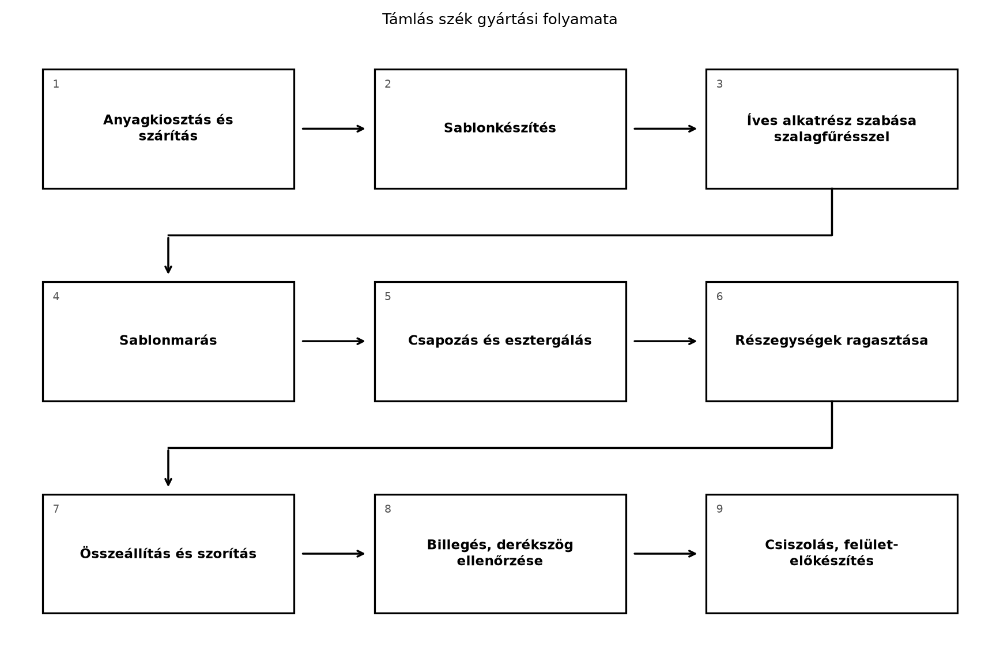

Egy vendéglő negyven darab azonos támlás széket rendel. A rajz szép: a hátsó lábak enyhén hátrafelé dőlnek, a támla ívelt, az első lábak esztergáltak. Ha az asztalos minden támlát kézzel, „érzésből” szab, a székek egymás mellett sem lesznek egyformák. A csapok nem illeszkednek pontosan, a szerkezet lötyög, a szék billeg. A sorozatgyártás csak úgy működik, ha a műhely sablonokkal dolgozik: a sablon viszi át a rajz kontúrját az anyagra, és a gépi megmunkálás is a sablont követi. Ebben az alfejezetben a támlás széket használjuk munkadarabnak, mert minden fontos technológia megtalálható benne: íves szabás, sablonmarás, hajlítás, csapozás, esztergálás, ragasztás és ellenőrzés.
A gyártás nem egyetlen nagy művelet, hanem részegységek sorozata. A támlás széknél először az elülső keretet (két első láb és elülső káva), majd a hátsó keretet (két hátsó láb és íves támla) ragasztjuk. Ezután jönnek az oldalsó kávák, az ülőkeret és a csapozott kötések. A folyamatot az alábbi ábra mutatja.

Definíció. A sablon olyan segédlemez, amely az alkatrész pontos körvonalát vagy furathelyeit adja meg. A sablon anyaga leggyakrabban rétegelt lemez, MDF vagy műanyag; az anyaga legyen méretállandó és kopásálló. A sablon nem a munkadarabbal azonos méretű, ha alsómarón vezetőgyűrűt használunk: a sablon a gyűrű és a marószerszám átmérőkülönbségének megfelelően eltér a kész kontúrtól: külső kontúrnál kisebb, belső kontúrnál nagyobb.
Definíció. A sablon szerinti marás az a művelet, amikor a munkadarabra rögzített sablon egy vezetőgyűrűn vagy másolócsapon fut, a forgó marószerszám pedig a sablon kontúrját a munkadarabra másolja. Ezt a módszert az alsómarónál a Asztalos marógép (alsómaró): profilmarás, díszlécek, sablon szerinti marás alfejezet mutatta be részletesen.
Definíció. A gőzölt hajlítás olyan alakadás, amelynél a tömörfa lécet forró, nedves gőzben felpuhítjuk, majd sablonra hajlítjuk. Lehűlés és szárítás után az alkatrész megtartja az ívet. A rétegelt-ragasztott hajlítás ezzel szemben vékony falemezeket ragasztóval, formára szorítva alakít ívessé; a rétegek a présben kötnek meg, így a visszarugózás kisebb.
Szabály. A csapozásnál a csapváll nem mindig derékszögű. Ha a hátsó láb a függőlegestől 10°-kal hátradől, a láb és a támla közötti csapváll szöge is ferde lesz. Ezt a szöget a szerkezeti rajz Ülőbútorok: típusok, állványszerkezet, ergonómia; a támlás szék szerkezeti rajza alapján kell beállítani, nem „szemre”.
Összefüggés. A sablon eltérítése az
alsómarónál:
ahol
a vezetőgyűrű külső átmérője,
a marószerszám átmérője, mindkettő mm-ben,
pedig az az érték, amennyivel a vágás a sablon peremétől eltér. Szabály:
külső kontúrnál a sablon a kész mérethez képest minden oldalon
-vel
kisebb (teljes méretben
-vel),
belső kontúrnál (kivágásnál) minden oldalon
-vel
nagyobb.
Az ábrán jól látszik, merre esik az eltérítés: a vezetőgyűrű a sablon peremén fut, a vágás pedig a gyűrű szélénél -vel beljebb, a munkadarab felé esik. Az interaktív kalkulátorban a gyűrű és a szerszám átmérője, valamint a külső vagy belső kontúr választható, és a szükséges sablonméret élőben számolódik.
A székalkatrészeket mindig egészséges, száraz fából szabjuk. A kemény lombos fajok – bükk, tölgy, kőris, szil – állják a csapozást és a hajlítást, a lágy fenyő hajlamos a rostemelkedésre és a csapvállak benyomódására. A fa nedvességtartalma beltéri bútorhoz kb. 8–12% (tájékoztató, ellenőrizendő a fafaj és a fűtési környezet szerint). Vágás előtt minden darabon ki kell nézni a göcsöt, repedést, vetemedést. A rajz–anyag–művelet hármas szerint a rajzból szabáslistát készítünk, a szabáslistából pedig kiosztjuk az anyagot.
A sablont 1:1 méretarányú rajzról vagy a kész alkatrészről vesszük le. A kontúrt felrajzoljuk a sablonlemezre, majd szalagfűrésszel kivágjuk. A vágást a rajz külső oldalán vezetjük úgy, hogy a rajzvonal látható maradjon; a sablon pontos élét utána kézzel, reszelővel és csiszolóval alakítjuk ki. A sablon élére mindig fel kell írni a termék nevét, az anyag vastagságát és a bázisél jelét, mert a sablon elfordítva már nem használható. A sablon pontossága közvetlenül a termék pontosságát adja; a kopott, repedt sablont ki kell selejtezni.
A sablonnal a kontúrt átrajzoljuk a munkadarabra. A szalagfűrészen a rajzvonalon kívül 3–5 mm ráhagyással vágunk. A ráhagyás azért kell, mert a durva szalagfűrészvágás nem ad kész felületet, és az alsómaró csak kevés anyagot vesz le egyenletesen. A szalagszélességet az ív sugarához választjuk: minél szűkebb az ív, annál keskenyebb szalag kell. Egy 200 mm sugarú támlaívhez 10–15 mm széles szalag elegendő; egy 50 mm sugarú ívhez 6–8 mm-es szalag szükséges (tájékoztató, ellenőrizendő a szalaggyártói adattal). A gépet a Asztalos szalagfűrészgép alfejezetben tanultak szerint állítjuk be.
A sablont a munkadarab alsó oldalára rögzítjük. A rögzítés lehet csavaros szorító, kétoldalas ragasztószalag vagy gyorskioldó szorító, de a sablon ne mozduljon el a marás közben. Az alsómaró tengelyére a vezetőgyűrűt és a marószerszámot szereljük. A marást mindig ellenirányú marással végezzük: a munkadarabot úgy kell tolni, hogy a szerszám az asztalra és az ütközőhöz szorítsa, ne húzza ki a kezünkből. A fogásmélység oldalazó sablonmarásnál általában legfeljebb 2–4 mm fogásonként (tájékoztató, ellenőrizendő a szerszám- és gépkönyv szerint). Az egyenletes előtolás és az éles szerszám miatt az ív felülete sima lesz; ha megállunk, beég a fa, ha tompa a szerszám, kirojtozza a rostot.
Gépbiztonság. A szalagfűrészt és az alsómarót csak betanított, felügyelt tanuló kezelheti; védőberendezés nélkül, egyedül, fáradtan ne végezze. A szalagfűrészen a felső vezetőt a munkadarab vastagságához közel, kb. 3–5 mm-re állítjuk, a burkolatok zártak. Az alsómarón a marószerszám fölött védőburkolatot használunk, a munkadarabot tolófával vagy előtolóval toljuk, a kezünk soha ne kerüljön a szerszám fölé. Mindkét gépnél kötelező védőszemüveg, hallásvédelem, fapor elleni maszk; kesztyűt forgó szerszámnál tilos viselni, mert a szerszám behúzhatja. A szerszámcseréhez, beállításhoz mindig áramtalanítsunk, és várjuk meg, amíg a szerszám megáll.
A gőzölt hajlítást jól megválasztott fánál alkalmazzuk. A bükk, kőris, szil és a tölgy jól hajlítható; a luc és a fenyő rosszul. A hajlított lécek legyenek egyenes rostúak, göcs- és repedésmentesek. A művelet:
Az ábra a hevederes hajlítást mutatja: a végütközős acélheveder a léc húzott (külső) oldalára kerül, így a semleges szál a heveder felé tolódik, és a fa főleg nyomást kap. A gőzkamra nyitásakor kiáramló forró gőz miatt a kezelő oldalt áll, hőálló kesztyűt és arcvédőt visel. Az interaktív változatban a lépések egyenként léptethetők.
A rétegelt-ragasztott hajlításnál ezzel szemben 2–4 mm vastag lemezeket ragasztóval kennek, a rétegeket a formára préselik, és a ragasztó megkötése után alakul ki az ív. Ez a módszer méretpontosabb, de több anyagot és ragasztót igényel. A forma ugyanaz a sablon lehet, mint a tömörfa hajlításnál.
A támlás széknél a hátsó lábak és a támla közötti szög nem 90°. Például ha a hátsó láb 10°-kal hátradől, a támla vízszintes kivitelű, akkor a támla és a láb közötti csapváll egyik oldala 100°, a másik 80° (szemléltető érték). Ezt a szöget a rajzon a csapváll jelöli. A csapozás lépései:
Ferde csapozásnál a leggyakoribb hiba, hogy a csapváll párhuzamos a bázissal, de a csap szöge nem követi az illesztési szöget. Ezért a csapozást sablonnal vagy jelölő idommal érdemes végezni, nem szemre.
Az esztergált lábaknál az első művelet a nyolcszögletűre gyalulás. A négyszögletes anyagot egyengető gyalun bázislappal és bázisével kialakítjuk, majd vastagsági gyalun a kész méretre munkáljuk. Az éleket letörjük, hogy a darab közel hengeres legyen, és a csúcsesztergán ne üssön. A befogást és az esztergálást a Faesztergálás: gépek, szerszámok, alapműveletek alfejezet szerint végezzük. A lábon a káva felé csapot hagyunk, amelyet a furatba illesztünk. A csap átmérőjét a furat átmérőjéhez kell igazítani, tűrése 0,1–0,2 mm alulméretezés a ragasztótér miatt (tájékoztató). A lábak alsó részét, a lábfejet, csak az összeszerelés után, síkból mérve igazítjuk, nehogy a végső lábhossz eltérjen.
Az összeállítás sorrendjét a részegységek szerkezete határozza meg. Először az elülső keretet ragasztjuk: két első láb és az elülső káva. A ragasztó megkötése után a hátsó keretet: két hátsó láb és az íves támla. Csak ezután illesztjük a két keretet az oldalsó kávákkal és az ülőkerettel. Ha az összes kötést egyszerre ragasztanánk, a szorítók nem tudnák a kereteket síkban tartani, a szék elcsavarodna.
Ragasztó. Beltéri székhez PVAc (fehér) ragasztót használunk, vízállósági osztálya D3, mert a szerkezet időnként nedves törlésnek lehet kitéve (MSZ EN 204 szerinti osztályok, ellenőrizendő). Kültéri székhez D4 osztályú ragasztót válasszunk. A ragasztót mindkét felületre egyenletesen, vékonyan hordjuk fel. A csapokat nem szabad „úszni hagyni” a ragasztóban, mert a felesleg kinyomódik, és a felületkezelésnél foltokat okoz.
Szorítás. A keretragasztáshoz hosszú cső- vagy hevederes szorítókat, sarokszorítókat használunk. A szorítás nyomása legyen egyenletes, de ne töressze be a csapvállakat. A szorító pofái és a fa közé papír- vagy falemez alátétet teszünk, hogy a felület ne sérüljön. A derékszöget és a síkbafekvést azonnal, még a ragasztó megkötése előtt ellenőrizzük. A ragasztó kinyomódó feleslegét nedves ruhával azonnal letöröljük.
A felületkezelés csak akkor lesz egyenletes, ha a csiszolás sorrendje és a portalanítás szabályos. A gépi marás és gyalulás nyomait először 80-as, majd 120-as, végül 180-as szemcseméretű csiszolóanyaggal dolgozzuk el. A csiszolást mindig rostirányban végezzük; a rostirányra merőleges karcolások a pácolás után feltűnőek. Az éles éleket enyhén letörjük, mert a lakk az élekről lepattog. A ragasztómaradványokat, rostemelkedést, gittet a pác előtt el kell távolítani. A csiszolási folyamatot a Csiszolási technológiák felületkezelés alá és a méret-, minőség-ellenőrzés alfejezet írja le részletesen.
Példa. Egy íves oldalkáva kész vastagsága 20 mm. Az alsómarón a vezetőgyűrű külső átmérője , a marószerszám átmérője . Mennyivel tér el a sablon a kész kontúrtól külső, illetve belső kontúr esetén?
Számítás.
Az íves oldalkáva külső kontúrjához a sablon minden oldalon 9 mm-rel kisebb a kész körvonalnál (teljes méretben 18 mm-rel); ha a sablon belső kivágás, minden oldalon 9 mm-rel nagyobb. ∎
Ellenőrzés: Ha a szerszám átmérője nagyobb, például 20 mm-es, akkor , tehát nagyobb szerszámmal kisebb az eltérés, mert a vágás közelebb kerül a gyűrű széléhez. Ez a gyakorlati tapasztalattal egyezik.
Számítás 1. Egy 30 mm vastag bükk lécet gőzölt hajlításhoz készítünk elő. Tájékoztató ökölszabály: kb. 60 min gőzölés 25 mm vastagságra. Mennyi a gőzölési idő?
Tehát a lécet kb. 72 percig gőzöljük (tájékoztató, ellenőrizendő). ∎
Számítás 2. A támla legszűkebb ívének belső sugara 80 mm. Tájékoztató gyártói adatok szerint a szalagfűrészlap legkisebb vágható sugara a szalagszélesség kb. 3–7-szerese (ellenőrizendő: szalaggyártói táblázat). Válasszunk 8 mm széles szalagot: minimális sugara kb. 25–50 mm, tehát a 80 mm-es ívet biztonsággal vágja. A 15 mm-es szalag minimális sugara kb. 80–110 mm, így a 80 mm-es ív már nem vágható vele. A keskenyebb szalag tehát biztonságosabb választás a szűk ívekhez, de egyenes vágáshoz kevésbé merev. ∎
Cél: Íves támla készítése tömörfából sablon szerint, ráhagyás nélküli, kész kontúrral.
Anyag: 20 mm vastag bükk lap, 12 mm vastag rétegelt lemez sablon; a sablon rögzítése kétoldalas szalaggal, csavarral vagy gyorsszorítóval (ragasztóval nem, mert az végleges kötés).
Gépek és szerszámok: szalagfűrészgép, asztalba szerelt felsőmaró (sablonmarásra alkalmas marógép), vezetőgyűrű (30 mm), 12 mm átmérőjű, szárasmaró (sablonmaró), tolófa, szorítók, csiszolóvászon, mérőszalag, derékszögelő.
Beállítási adatok (tájékoztató, ellenőrizendő): szalagfűrész szalagsebesség kb. 10–20 m/s; felsőmaró fordulatszáma a 12 mm-es szerszámhoz kb. 18 000–22 000 min⁻¹ (ellenőrizendő: a szerszámon és a gép adattábláján jelölt legnagyobb fordulatszám; alsómarón nagyobb átmérőjű sablonmaró fej és kisebb fordulatszám használatos); fogásmélység sablonmarásnál 2 mm fogásonként.
Gépbiztonság. A művelet betanított, felügyelt tanulónak szól; védőberendezés nélkül, egyedül, fáradtan ne végezd. A szalagfűrészt a szalagvezetőkkel, a felső tárcsa burkolatával és a védőszemüveggel használjuk; kesztyű tilos. A felsőmarón a szerszám fölött védőburkolat, a munkadarabhoz tolófa vagy előtoló; a gépasztal elszívása legyen bekapcsolva. Indítás előtt ellenőrizni kell: a szerszám éles és megfelelően rögzített, a vezetőgyűrű nem laza, a védőburkolat zár, az elszívás működik, a munkadarabban nincs szeg, repedés vagy laza göcs.
Lépések:
Dokumentálás: munkanaplóba beírjuk a beállításokat, a munkadarab méretét, a szerszám átmérőjét és a megfigyelt hibákat.
A székgyártásnál a minőséget a részegységeknél és az összeszerelés után is ellenőrizni kell.
Ha eltérést tapasztalunk, a hibás részegységet a ragasztás megkötése előtt javítjuk. Megkötött ragasztás után a szerkezetet csak fűrészeléssel, csiszolással vagy újra kötéssel lehet korrigálni.
Tünet: a kész szék három lábon áll, a negyedik alatt hézag van.
Lehetséges okok: a lábak hossza eltér, a részegységek elcsúsztak a szorításnál, a csap nem ült be teljes mélységig, a padló egyenetlen.
Vizsgálat: sík lapra tesszük a széket, hézagmérővel mérünk. Megnézzük a lábak síkra simulását és a csapfészkek ülését.
Javítás: a hosszabb láb alját óvatosan, fokozatosan csiszolással igazítjuk a többiek szintjéhez. Ha a csap nem ült be, a kötést megbontani nem érdemes, de a láb alját síkba lehet venni.
Megelőzés: összeállító készülékben ragasztunk, a szorítás előtt a lábakat síkra állítjuk, a csapokat ellenőrzött mélységbe fúrjuk.
Tünet: a gőzölt alkatrész húzott oldalán repedés, vagy a sablonról lehűlés után törés.
Okok: a fa göcsös, a rostirány nem követi az ívet, a hajlítás sugara túl szűk a vastagsághoz képest, a gőzölés ideje rövid, a hajlítás hirtelen történt, heveder nélkül hajlítottunk.
Javítás: a repedt darab selejt. A megmaradt alkatrészeknél a sablont módosíthatjuk, ha a sugár túl szűk; a gőzölési időt növeljük.
Megelőzés: a hajlítandó lécet rostirány szerint válasszuk, hevederes hajlítással a húzott oldal szakadása megelőzhető; heveder nélkül a hajlítás sugara legyen legalább kb. 15–30-szorosa a vastagságnak, hevederrel ennél jóval kisebb sugár is elérhető (tájékoztató, ellenőrizendő: szakkönyvi adat), próbadarabon ellenőrizzük.
Tünet: az ív felületén hullámok, beégések, rojtozott rostok.
Okok: az előtolás nem egyenletes, a marás iránya egy helyen megfordult, a szerszám tompa, túl nagy fogásmélység, a munkadarab elmozdult a sablonban.
Megelőzés: éles szerszám, kisebb fogásmélység, egyenletes előtolás, a sablon biztos rögzítése. Ha a hiba nagy, a darabot a sablonnal újra kell maratni.
Tünet: a felületkezelés után a csapozás környékén világosabb, zsíros foltok.
Okok: a kinyomódott ragasztót nem távolították el azonnal, a ragasztó beszívódott a fa pórusaiba, a csiszolás nem távolított el minden ragasztómaradékot.
Javítás: a ragasztófoltokat csiszolással teljesen el kell távolítani, mielőtt a pácot felvisszük. A megkeményedett ragasztó csiszolás nélkül nem pácolódik.
Megelőzés: a ragasztás után azonnal nedves ruhával törlünk, száradás után a kötés környékét alaposan megcsiszoljuk, próbapáccal ellenőrzünk.
Egy asztalos tanuló első nagyobb megrendeléseként húsz darab étkezőszéket készített. A támlákat szalagfűrésszel, sablon nélkül vágta, mert a sablonkészítésre nem akart időt szánni. Az első öt darab még hasonlított egymásra, de a többinél a kézi szabás ráhagyása és az ív sugara eltért. Összeállítás után a székek egymás mellett nem voltak egy méretűek, a csapok nem illeszkedtek, néhány szék billegni kezdett. A megrendelő reklamált. A tanuló végül a teljes sorozatot újragyártotta, ezúttal sablonnal és csapozó idommal. A tanulság: a sablon nem fölösleges idő, hanem a sorozatgyártás alapja. Az íves alkatrészeknél a sablon és a próbadarab nélküli gyártás mindig kockázatos.
1. feladat (A) Definiáld a sablon szerepét az íves alkatrész gyártásában, és nevezz meg két alkalmas sablonanyagot.
2. feladat (A) Számítsd ki az értéket, ha és .
3. feladat (B) Egy bükk támla léc vastagsága 20 mm. Tájékoztató gőzölési ökölszabály: 60 min / 25 mm vastagság (ellenőrizendő). Hány percig kell gőzölni a lécet?
4. feladat (B) Írd le szöveges rajzleírással a hátsó láb és a hátsó támla csapozását, ha a szerkezeti szög 100°. Milyen lesz a csapváll? Mit jelölsz be először?
5. feladat (C) Egy szék sorozatgyártásakor a gőzölt támlák egy része megreped. Sorolj fel három lehetséges okot, és mindegyikhez adj meg egy megelőző intézkedést.
6. feladat (D) Készíts ellenőrzőlistát a szék összeállítása után. Sorold fel legalább négy mérendő pontot, az eszközöket és a tájékoztató tűréseket (jelöld ellenőrizendőnek).
1. (A) A sablon az alkatrész pontos körvonalát adja meg, és a sorozatgyártásban azonos alkatrészeket biztosít. Alkalmas anyag: rétegelt lemez, MDF, műanyag.
2. (A)
A sablon oldalanként 12 mm-rel tér el a kész kontúrtól: külső kontúrnál
kisebb, belső kontúrnál nagyobb (teljes méretben
mm).
3. (B)
A lécet kb. 48 percig gőzöljük.
4. (B) A hátsó láb a függőlegestől hátrafelé dől, így a láb és a vízszintes támla illesztési szöge 100°. A csapváll ferde lesz: az egyik oldalon 100°, a másikon 80°. Először a vállvonalat jelöljük be az állítható szögmérővel, és próbadarabon ellenőrizzük, hogy a csapváll felfekvése teljes. A csap vastagsága a támla vastagságával egyező, és a csapot a ferde vállhoz igazítjuk.
5. (C) Lehetséges okok és megelőzés: - Göcs, repedés a lécben → csak egyenes rostú, egészséges anyagot válasszunk. - A hajlítás sugara túl szűk a vastagsághoz → növeljük a sugarat, vagy kisebb vastagságot válasszunk. - A gőzölés ideje rövid → a lécet a vastagságnak megfelelő ideig gőzöljük, próbadarabon ellenőrizzük. - A hajlítás hirtelen történt → a lécet folyamatosan, gyorsulás nélkül hajlítsuk a sablonra.
6. (D) Ellenőrzőlista a szék összeállítása után: - Billegés: sík lapon, hézagmérővel; tűrés legfeljebb 0,5 mm hézag (tájékoztató, ellenőrizendő). - Derékszög és átlók: a keret átlóinak különbsége legfeljebb 1 mm (tájékoztató). - Lábhossz: a négy láb alsó síkjának eltérése 0,5 mm-en belül (tájékoztató). - Csapülések: szemrevételezés, hézagmentesség; ragasztófilm a kötésben. - Szimmetria: a támla középvonala a hátsó lábak középvonalával egybeesik, az oldalsó kávák párhuzamosak.
Az ülőbútorok gyártásában az íves alkatrészeket sablonnal szabjuk és alsómarón, vezetőgyűrűvel marjuk. A sablon a rajz kontúrját viszi át a munkadarabra, és a sorozat minden darabját azonossá teszi. A sablon eltérítése . Az íves alkatrészek készülhetnek tömörfa szabással, gőzölt hajlítással vagy rétegelt-ragasztott hajlítással; a gőzölési időt a vastagság szerint becsüljük (kb. 60 min/25 mm, tájékoztató). A szöget bezáró csapozásnál a csapváll ferde, a szöget rajzról kell beállítani. Az esztergált lábakat nyolcszögletű előgyalulás után csúcsesztergán alakítjuk, a csapot a furathoz illesztjük. Az összeállítás sorrendje: elülső keret, hátsó keret, oldalsó kávák, ülőkeret. A ragasztást egyenletes szorítással, a derékszög és a sík ellenőrzésével végezzük. A kész szék nem billeghet, a lábak alsó síkját szükség esetén utólag igazítjuk. Továbbvitt eredmény. Az itt tanult íves alkatrészgyártás, sablonhasználat, csapozás és ellenőrzés közvetlenül felhasználható a vizsgaremek elkészítésében, annak gyártási dokumentációjában és minőségellenőrzésében.